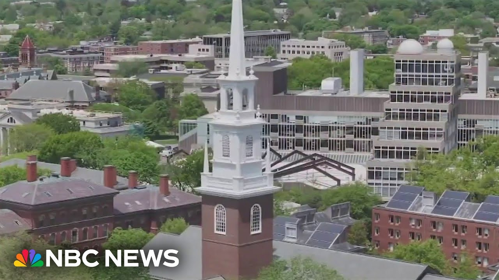

【特朗普政府禁止哈佛大学招收国际学生】
Summary: The Trump administration has barred Harvard from enrolling foreign students and ordered over 6,700 currently enrolled to transfer or lose legal status, accusing the university of fostering anti-American and anti-Semitic sentiments.
摘要： 特朗普政府禁止哈佛大学招收外国学生，并命令6700多名在校国际学生转学或失去合法身份，指责该校助长反美和反犹太主义情绪。

⏱️ Estimated Reading Time: 3 min
Tonight, the Trump administration escalating its battle with Harvard University, barring the school from enrolling foreign students and ordering the more than 6700 currently enrolled to transfer or lose their legal status.
今晚，特朗普政府升级了与哈佛大学的斗争，禁止该校招收外国学生，并命令6700多名在校学生转学或失去合法身份。
27% of their students are foreign students and they will have to find some other university to go to and hopefully they find one that cares about them and provides a safe environment.
27%的学生是外国学生，他们将不得不寻找其他大学就读，希望他们能找到一所关心他们并提供安全环境的学校。
The White House saying Harvard has become a quote hotbed of anti-American, anti-Semitic, pro-terrorist agitators, adding the university now must face the consequences of their actions.
白宫称哈佛大学已成为“反美、反犹太、支持恐怖主义煽动者的温床”，并补充说该校现在必须为自己的行为承担后果。
There should be a warning to every other university to get your act together.
这应该是对其他所有大学的警告，要求它们整顿行为。
Harvard calling the government's action unlawful, adding, "We are fully committed to maintaining Harvard's ability to host our international students and scholars."
哈佛大学称政府的行动是非法的，并补充说：“我们全力致力于保持哈佛大学接待国际学生和学者的能力。”
It's saddening and it's stressful.
这令人悲伤且压力巨大。
Carl Molden is a Harvard student from Austria studying government.
卡尔·莫尔登是来自奥地利、在哈佛大学学习政治的学生。
Do you think you'll be back at Harvard in the fall?
你认为秋季能回到哈佛吗？
It's hard to make a call.
很难说。
I hope.
我希望如此。
I'm uncertain.
我不确定。
I think with this administration, anything can happen.
我认为在这届政府下，任何事情都可能发生。
In April, the administration froze more than $2 billion in federal grants to Harvard over what the White House said were concerns about unchecked anti-semitism on campus and demands to change hiring and admissions processes.
4月，政府冻结了哈佛大学超过20亿美元的联邦拨款，白宫称原因是担心校园内不受控制的反犹太主义以及要求改变招聘和招生程序。
The university's president pressed by Lester last month.
上个月，该校校长遭到莱斯特的追问。
Is this really about anti-semitism?
这真的是关于反犹太主义吗？
I would say that at Harvard we have a real problem with anti-semitism.
我认为哈佛大学确实存在反犹太主义问题。
We take it very seriously and we're trying to address it.
我们非常重视并正在努力解决它。
We don't really see the relationship to research funding at Harvard and other universities.
我们并不认为这与哈佛大学和其他大学的研究资金有关。
They are two different issues.
这是两个不同的问题。
And Garrett H joining us now from the White House.
现在加勒特·H从白宫加入我们。
And Garrett, the Trump administration is asking for Harvard student records.
加勒特，特朗普政府正在要求哈佛大学提供学生记录。
That's right, Lester.
是的，莱斯特。
DHS says the university now has 72 hours to turn over disciplinary, criminal, and protest records for all students over the last 5 years if they hope to see this order reverse.
国土安全部表示，如果哈佛大学希望撤销这一命令，必须在72小时内提交过去5年所有学生的纪律、犯罪和抗议记录。
Harvard says it's working on guidance for its foreign students.
哈佛大学表示正在为外国学生制定指导方案。
Lester Garrett Hake, thank you.
莱斯特·加勒特·哈克，谢谢。
Thanks for watching.
感谢观看。
Stay updated about breaking news and top stories on the NBC News app or follow us on social media.
请通过NBC新闻应用或社交媒体关注突发新闻和头条新闻以获取最新信息。